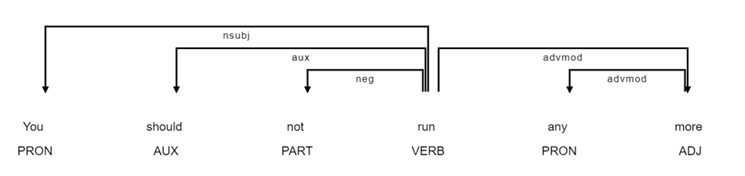

10.2: Feature Construction
For text classification,
the most common features used are 1) N-gram (Unigram, bigram, and trigram) 2)
syntactic N-gram (SN-gram) 3) Domain-specific taxonomy features and 4) Meta
features. This applies to both deep learning and traditional machine learning
algorithms.
10.2.1
N-gram
In human language, words do not occur in isolation. Often,
we need other supporting words to understand the whole situation. For example,
if you want to invite your friend for coffee. You will not simply tell your
friend 'Coffee'. Instead, you might say Let's go for coffee . Here we needed 3
words: Let's go for , to be able to explain our core objective of inviting
friends for 'coffee'. Similarly, in some situations, we will need words after
the main context word to understand the situation. This is not always true
however, let's imagine your friend is sitting at your house and you prepared
coffee in your kitchen. You proceed towards your friend with an extra cup of
coffee and offer him after saying only one word 'coffee'. Most likely your
friend will understand that you are offering him coffee and will accept it
gracefully.
N-grams are a sequence of elements such as words,
characters, part of speech, and dependency tags as they appear in the text. n
in n-grams refers to the number of elements in the sequence.
We can represent a text document in multiple ways in
n-gram for feature construction while considering whether to include previous
and next words. The most common types are unigram, bi-gram, and tri-gram
Uni-gram is a way of representing textual words in
isolation. bi-gram represents texts by considering one surrounding word, in
addition to the current word. tr-gram considers 2 previous words, in addition
to the current word. We can similarly go for quad-gram and so on. However, the
number of unique n-grams increases manifold and becomes difficult to represent
as machine learning features embedding and training a classifier. Beyond uni-gram, in n-gram, words are concatenated with each other
using a special character such as the underscore _ .
Example: For a sentence that reads "You are so adorable!".
Below is an example of n-grams.
uni-gram:
["you", "are", "so", "adorable", ! ]
bi-gram: ["you_are",
"are_so", "so_adorable", adorable_! ]
tri-gram: ["you_are_so",
"are_so_adorable", "so_adorable_!"]
10.2.2 Syntactic
N-gram
If n-grams are extracted by
the order in which the elements are present in syntactic dependency trees that
follow each other in the path of the syntactic tree, and not in the text. We
call such n-grams syntactic n-grams (sn-grams) [1].
Human spoken and written
languages typically follow a hierarchy structure, such as sentences, clauses,
phrases, and words. The dependency tree is a visual representation of the
linguistic structure, in which the grammatical hierarchy is graphically
displayed. Connecting points in the tree diagram are called nodes, with one
word being the head and the other being the dependent of the relation.
Syntactic dependencies are obtained through dependency parsing.
Consider the example
sentence which can be a sarcastic remark to an obese person You should not run
anymore . Figure 10.2.2 shows how the dependency parse tree will look like,
along with.

Fig 10.2.2: syntactic dependency tree for example.
In this example, run is
the root word. Below are the dependency relationships in this sentence.
(run, You), connected by
nominal subject relationship.
(run, should), connected by
an auxiliary.
(run, not), connected by a
negation modifier.
(run, more), connected by
an adverb modifier.
(more, any), connected by
an adverb modifier.
We follow the arrow-marked path
in the dependencies to obtain syntactic n-grams. In this example, all the
relationships are between 2 words only, except for run -> more ->
any , where the path exists between 3 words. This can be a candidate for
syntactic tri-gram.
We used the companion
python library SNgramExtractor for this
book and extracted the below pairs of syntactic bi-grams and tri-grams from the
example sentence.
Syntactic bi-grams: "run_You",
"run_should",
"run_not", "more_any",
"run_more"
Syntactic tri-gram: "run_more_any"
SngramExtractor uses Spacy language model for extracting sn-grams. We can also
specify which language model we want
to use. This allows us to use non-English language models and extract syntactic
n-grams of non-English languages as well. SngramExtractor follows
object-oriented pattern. It can process one sentence at a time. For an example
sentence 'You should not run
any more', below syntax will help us extract bi-gram and tri-gram.
text = 'You should not run any more'
SNgram_obj=SNgramExtractor(text,
meta_tag='original',
trigram_flag='yes',
nlp_model=None)
output=SNgram_obj.get_SNgram()
print('Original
Text:',text)
print('SNGram bigram:',output['SNBigram'])
print('SNGram trigram:',output['SNTrigram'])
In this syntax, we have not specified nlp_model
parameter. This has been set as None . In such a case, we use en_core_web_sm, as the
default language model. Below is how the output will look like for the executed
syntax.
Original Text: You should not run any more
SNGram bigram: run_You run_should run_not more_any run_more
SNGram trigram: run_more_any
Unlike traditional n-grams,
syntactic n-grams are less arbitrary. Dependency parsing is language-specific
and different for each language. Hence by extracting syntactic n-grams, we can
include linguistic-rich features in our model. Additionally, as we are not
including all the possible n-grams that can be created, their numbers are less
than the number of traditional n-grams. Hence, syntactic n-gram features can be
interpreted as a linguistic phenomenon, while traditional n-grams have no
plausible linguistic interpretation and they are merely a statistical artifact.
One shortcoming with
syntactic n-gram is that it is dependent on the availability of syntactic
parser and lexical resources. Not all human language has lexical resources to
be able to build SN-gram. For the languages for which we have lexical resources
available, it requires the construction of dependency parse trees, which
increases processing time. In contrast, traditional n-grams are faster to
compute.
10.2.3
Domain-Specific
Taxonomy Features
The use of background
knowledge is largely unexploited in text classification tasks. To include
background knowledge in the form of metadata, ontology or taxonomy-generated
features can be incorporated in machine learning classifiers. It acts as a
second-level context. It can lead to improved interpretability and performance
of the model. For doing so, we focus on semantic structures, derived through
hypernym relation between words.
Individual words are mapped
to higher-order semantic concepts. For example, for the word tiger , its
WordNet hypernym is the term mammal . It can be further mapped with animals .
We can ultimately reach the most general term, which is an entity.
Before we construct
hypernym-based features, word-sense disambiguation should be performed, get the
exact context behind the word. For example, the word bank can have different
meanings, in different contexts. Between the sentences "I went to the bank
to withdraw money." and "I was relaxing near the bank of the river in
the morning.". In both sentences, the meaning of bank is different. In the
first sentence, the bank refers to a financial institution and in the second
sentence, a bank refers to a recreational place.
For each word in the
document, we find a hypernym path between the word and the most general term.
Document-based taxonomy thus created, is a tree-like structure. Word-specific
tree structures are collated at the document level to create a corpus-based
taxonomy at the document level.
One shortcoming of using
the Wordnet-based taxonomy feature is that Wordnet is a general-purpose
taxonomy. If a customized lexical resource can be created for the specific
domain for which the classifier is being developed, it can sharply increase the
machine learning classifier and its usability even further.
10.2.4 Meta
Features
These features have been
used previously in predicting whether a question posted on StackOverflow
can be deleted. Stackoverflow is an online forum for
software engineers and programmers to post their questions. This website is
moderated by volunteers who delete questions that are too broad or off-topic.
To reduce manual moderation and automate this task, several algorithms and
approaches have been suggested. One such method [2] is to use
meta-features from past user-generated content and site-generated statistics.
Meta features from the users were grouped into 4 categories: profile,
community, content, and syntactic.
Profile features are
defined based on the historical statistics of the user who posted the question.
For example, how old is the account which posted the question, the number of
previous questions, the number of previous answers, the question to the age of
account ratio, answer to the age of account ratio. This can be used for example
in Twitter, how many tweets have been posted, how many tweets replied to, how
many tweets are liked, and how many people follow the Twitter account.
Similarly, many such statistics can be computed for the users as scores based
on functionalities available on the social media website.
Community features in StackOverflow are
average reputation and popularity
statistics for the user. For example, the average answer score, the average
number of comments, and the average question score. On Twitter, for example, we
can calculate the average number of retweets for the tweets of users, the
average number of likes, and replies received in the past for their tweets.
Many of the content and
syntactic meta-features use LIWC scores. LIWC stands for Linguistic Inquiry and
Word Count. LIWC2007 is a software that contains 4,500 words and 64
hierarchical dictionary categories. Given an input natural language text
document, it outputs a score for the input against all 64 categories after
analyzing writing style and psychometric properties.
Content features were
computed based on the textual content of the question. For example, the average
number of URLs, number of previous tags, and LIWC score of Pronouns. On
Twitter, we can similarly calculate the average number of hashtags used by
users in past, and the number of links posted.
Syntactic features are
computed based on the writing style of the written text. For example, the
number of characters, upper case characters, lower case characters, and digits
in the text document. These can be used as it is.